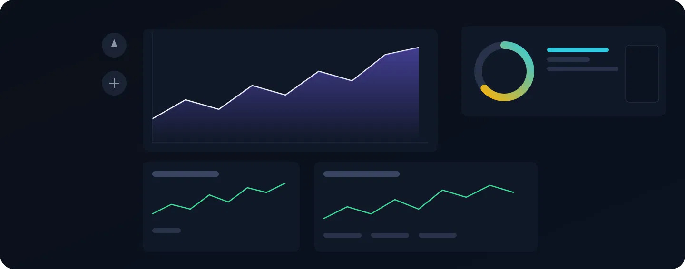
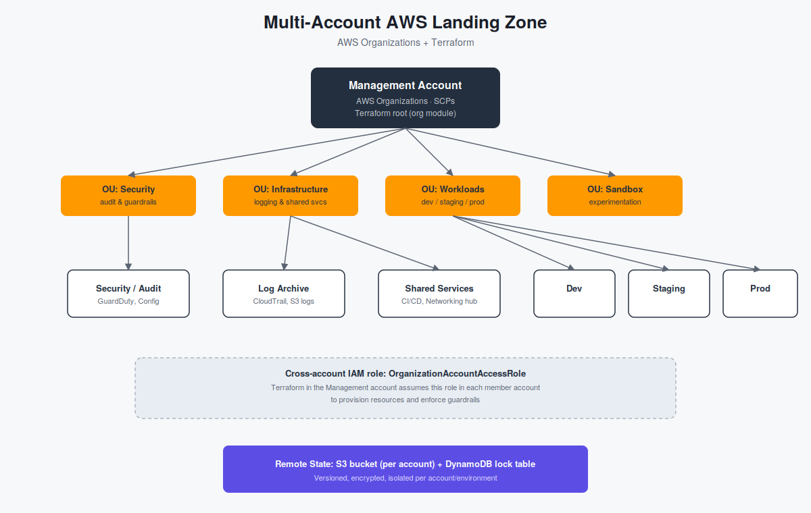

Building a Secure Multi-Account AWS Landing Zone with Terraform
📋 Table of Contents
- Why a Landing Zone?
- Why Multiple AWS Accounts?
- The Account Structure
- Terraform Project Structure
- Step 1 — Create the Organization and OUs
- Step 2 — Provision Member Accounts
- Step 3 — Guardrails with SCPs
- Step 4 — Centralized Logging
- Step 5 — Cross-Account Terraform Access
- Step 6 — Isolated Remote State
- Common Pitfalls
- Where This Goes Next
- Final Takeaway
Why a Landing Zone?
A single AWS account with a handful of EC2 instances works fine — until a second team, a second environment, or a compliance requirement shows up.
At that point, a single account can start working against the organization running it: one blast radius, one IAM namespace, one bill, and one set of guardrails trying to serve development, staging, and production all at once.
A landing zone is the baseline multi-account structure that everything else gets built on top of. It provides the foundation for accounts, organizational units, guardrails, centralized logging, and identity.
AWS provides a managed landing-zone implementation through AWS Control Tower. However, a solid and auditable landing zone can also be built directly using AWS Organizations and Terraform.
Understanding how to build these components yourself also makes it much easier to understand what managed solutions such as Control Tower are doing behind the scenes.
A landing zone is not just a collection of AWS accounts. It is the foundation for how those accounts are governed, secured, monitored, and managed.

AWS multi-account landing zone architecture showing organizational units, security, centralized logging, shared services, and workload accounts.
Why Multiple Accounts Instead of One Account with Tags?
Tags and IAM policies can provide a level of logical separation inside a single AWS account. Separate AWS accounts provide a much stronger isolation boundary.
- Blast radius: A misconfigured security group or leaked credential in development is isolated from production unless an explicit cross-account access path has been created.
- Billing clarity: Costs can be separated by account without relying entirely on tagging discipline.
- Service quotas: Many AWS service quotas are scoped at the account level, which helps prevent one environment from consuming resources needed by another.
- Compliance boundaries: Account boundaries provide a clear organizational boundary that can be easier to reason about during security and compliance reviews.
- Guardrails: Service Control Policies can be attached at the Organizational Unit level so that accounts inherit the same organizational restrictions.
The Account Structure
A minimal production-oriented AWS organization can separate accounts according to their responsibilities.
| Account / Group | Purpose |
|---|---|
| Management | Root of the AWS Organization. Owns Organizations, SCPs, and billing. Application workloads should not run here. |
| Security / Audit | Central security services and organization-wide security visibility. |
| Log Archive | Central destination for CloudTrail and configuration logs from member accounts. |
| Shared Services | Shared networking, CI/CD infrastructure, internal tooling, artifact repositories, VPNs, and similar services. |
| Workloads | Application environments such as development, staging, and production. |
| Sandbox | Disposable environments for experimentation and testing. |
These accounts can be organized using Organizational Units (OUs). OUs allow policies and guardrails to be applied to groups of accounts instead of configuring every account individually.
Terraform Project Structure
One common mistake is putting the entire AWS organization and every workload environment into one Terraform state file.
That creates unnecessary coupling. A change intended for development could interact with infrastructure belonging to production, and a single state lock can block unrelated work.
Instead, the organization layer and individual account environments should have separate state.
landing-zone/
├── org/
│ ├── main.tf
│ ├── accounts.tf
│ ├── scps.tf
│ ├── backend.tf
│ └── variables.tf
│
├── modules/
│ ├── account-baseline/
│ ├── cross-account-role/
│ └── centralized-logging/
│
├── environments/
│ ├── security/
│ │ ├── main.tf
│ │ └── backend.tf
│ │
│ ├── log-archive/
│ │ ├── main.tf
│ │ └── backend.tf
│ │
│ ├── shared-services/
│ │ ├── main.tf
│ │ └── backend.tf
│ │
│ ├── dev/
│ │ ├── main.tf
│ │ └── backend.tf
│ │
│ ├── staging/
│ │ ├── main.tf
│ │ └── backend.tf
│ │
│ └── prod/
│ ├── main.tf
│ └── backend.tf
│
└── README.md
The org/ directory runs against the Management
account and manages the organization itself.
The individual directories under
environments/ use credentials that assume
roles into their respective AWS accounts.
Step 1 — Create the Organization and OUs
The first layer is the AWS Organization itself. This code runs from the Management account.
AWS Organizations is a global service, but the AWS provider still requires a region to be configured.
# org/main.tf
terraform {
required_version = ">= 1.7"
required_providers {
aws = {
source = "hashicorp/aws"
version = "~> 5.0"
}
}
}
provider "aws" {
region = "us-east-1"
}
resource "aws_organizations_organization" "root" {
aws_service_access_principals = [
"cloudtrail.amazonaws.com",
"config.amazonaws.com",
"guardduty.amazonaws.com",
"sso.amazonaws.com",
]
feature_set = "ALL"
}
resource "aws_organizations_organizational_unit" "security" {
name = "Security"
parent_id = aws_organizations_organization.root.roots[0].id
}
resource "aws_organizations_organizational_unit" "infrastructure" {
name = "Infrastructure"
parent_id = aws_organizations_organization.root.roots[0].id
}
resource "aws_organizations_organizational_unit" "workloads" {
name = "Workloads"
parent_id = aws_organizations_organization.root.roots[0].id
}
resource "aws_organizations_organizational_unit" "sandbox" {
name = "Sandbox"
parent_id = aws_organizations_organization.root.roots[0].id
}This creates four OUs beneath the organization's root: Security, Infrastructure, Workloads, and Sandbox.
Step 2 — Provision Member Accounts
Once the organizational structure exists, Terraform can create the member accounts and place them directly into their intended OUs.
# org/accounts.tf
locals {
workload_accounts = {
dev = "aws+dev@yourcompany.com"
staging = "aws+staging@yourcompany.com"
prod = "aws+prod@yourcompany.com"
}
}
resource "aws_organizations_account" "security" {
name = "security-audit"
email = "aws+security@yourcompany.com"
parent_id = aws_organizations_organizational_unit.security.id
lifecycle {
prevent_destroy = true
}
}
resource "aws_organizations_account" "log_archive" {
name = "log-archive"
email = "aws+logs@yourcompany.com"
parent_id = aws_organizations_organizational_unit.infrastructure.id
lifecycle {
prevent_destroy = true
}
}
resource "aws_organizations_account" "shared_services" {
name = "shared-services"
email = "aws+shared@yourcompany.com"
parent_id = aws_organizations_organizational_unit.infrastructure.id
lifecycle {
prevent_destroy = true
}
}
resource "aws_organizations_account" "workloads" {
for_each = local.workload_accounts
name = "workload-${each.key}"
email = each.value
parent_id = aws_organizations_organizational_unit.workloads.id
lifecycle {
prevent_destroy = true
}
}prevent_destroy = true helps prevent an
accidental Terraform operation from attempting to remove
these accounts.
Newly created member accounts also receive an
OrganizationAccountAccessRole, which can be
used by the Management account to bootstrap resources in
the member account.
Step 3 — Guardrails with Service Control Policies
Service Control Policies (SCPs) are one of the most important components of an AWS multi-account architecture.
An SCP does not grant permissions. Instead, it establishes the maximum available permission boundary for accounts, users, and roles underneath it.
Think of an SCP as a ceiling on permissions rather than a permission grant.
Deny Leaving the Organization
resource "aws_organizations_policy" "deny_leave_org" {
name = "deny-leave-organization"
type = "SERVICE_CONTROL_POLICY"
content = jsonencode({
Version = "2012-10-17"
Statement = [{
Sid = "DenyLeaveOrganization"
Effect = "Deny"
Action = "organizations:LeaveOrganization"
Resource = "*"
}]
})
}Prevent CloudTrail Tampering
resource "aws_organizations_policy" "deny_disable_cloudtrail" {
name = "deny-disable-cloudtrail"
type = "SERVICE_CONTROL_POLICY"
content = jsonencode({
Version = "2012-10-17"
Statement = [{
Sid = "DenyCloudTrailTampering"
Effect = "Deny"
Action = [
"cloudtrail:StopLogging",
"cloudtrail:DeleteTrail",
"cloudtrail:UpdateTrail",
]
Resource = "*"
}]
})
}Restrict AWS Regions
resource "aws_organizations_policy" "deny_region_lockdown" {
name = "deny-non-approved-regions"
type = "SERVICE_CONTROL_POLICY"
content = jsonencode({
Version = "2012-10-17"
Statement = [{
Sid = "DenyOutsideApprovedRegions"
Effect = "Deny"
NotAction = [
"iam:*",
"organizations:*",
"route53:*",
"support:*",
"cloudfront:*"
]
Resource = "*"
Condition = {
StringNotEquals = {
"aws:RequestedRegion" = [
"us-east-1",
"ap-south-1"
]
}
}
}]
})
}Attach the Guardrails to the Workloads OU
resource "aws_organizations_policy_attachment" "workloads_guardrails" {
for_each = toset([
aws_organizations_policy.deny_leave_org.id,
aws_organizations_policy.deny_disable_cloudtrail.id,
aws_organizations_policy.deny_region_lockdown.id,
])
policy_id = each.value
target_id = aws_organizations_organizational_unit.workloads.id
}Step 4 — Centralized, Tamper-Resistant Logging
Centralized logging is another important part of a landing zone. Instead of keeping security logs inside each workload account, logs can be centralized into a dedicated Log Archive account.
A centralized destination also makes it easier to protect security logs from accidental or malicious deletion.
# modules/centralized-logging/main.tf
resource "aws_s3_bucket" "log_archive" {
bucket = "yourcompany-log-archive-${var.account_id}"
}
resource "aws_s3_bucket_versioning" "log_archive" {
bucket = aws_s3_bucket.log_archive.id
versioning_configuration {
status = "Enabled"
}
}
resource "aws_s3_bucket_lifecycle_configuration" "log_archive" {
bucket = aws_s3_bucket.log_archive.id
rule {
id = "transition-old-logs"
status = "Enabled"
transition {
days = 90
storage_class = "GLACIER"
}
}
}Bucket Policy
The bucket policy controls who can write to the centralized logging bucket and prevents deletion of archived objects.
resource "aws_s3_bucket_policy" "log_archive" {
bucket = aws_s3_bucket.log_archive.id
policy = jsonencode({
Version = "2012-10-17"
Statement = [
{
Sid = "AllowCloudTrailWrite"
Effect = "Allow"
Principal = {
Service = "cloudtrail.amazonaws.com"
}
Action = "s3:PutObject"
Resource = "${aws_s3_bucket.log_archive.arn}/*"
Condition = {
StringEquals = {
"aws:PrincipalOrgID" = var.organization_id
"s3:x-amz-acl" = "bucket-owner-full-control"
}
}
},
{
Sid = "DenyDelete"
Effect = "Deny"
Principal = "*"
Action = [
"s3:DeleteObject",
"s3:DeleteBucket"
]
Resource = [
aws_s3_bucket.log_archive.arn,
"${aws_s3_bucket.log_archive.arn}/*"
]
}
]
})
}Step 5 — Cross-Account Access from Terraform
Terraform should not depend on long-lived credentials stored separately for every AWS account.
Instead, the deployment identity can assume a role in the target account.
# environments/prod/main.tf
provider "aws" {
region = "ap-south-1"
assume_role {
role_arn = "arn:aws:iam::${var.prod_account_id}:role/OrganizationAccountAccessRole"
session_name = "terraform-prod"
}
}
module "account_baseline" {
source = "../../modules/account-baseline"
account_name = "prod"
organization_id = var.organization_id
log_archive_arn = var.log_archive_bucket_arn
enable_guardduty = true
budget_limit_usd = 5000
}
The important part is the
assume_role block. Terraform starts with an
identity that has permission to assume the target role and
then operates within the target account.
One CI/CD identity can reach multiple environments without storing permanent credentials for every AWS account.
This same pattern works well with CI/CD systems such as GitHub Actions using OIDC-based authentication.
Step 6 — Isolated Remote State per Account
Terraform state should also be isolated. Each account or environment should have its own state location and locking mechanism.
# environments/prod/backend.tf
terraform {
backend "s3" {
bucket = "yourcompany-tfstate-prod"
key = "landing-zone/prod/terraform.tfstate"
region = "ap-south-1"
dynamodb_table = "terraform-locks-prod"
encrypt = true
}
}This means that a Terraform operation against the development environment does not need to interact with the production state file.
Common Pitfalls
1. One State File for Everything
A single state file creates unnecessary coupling between environments and increases the potential blast radius of Terraform changes.
2. Attaching SCPs Per Account
Attaching guardrails individually works at small scale but becomes difficult to maintain as the organization grows. OU-level policies provide a more scalable model.
3. Leaving Root Access Unmanaged
Member accounts should have appropriate root-account protections and a controlled break-glass process. Routine administrative work should use delegated roles instead.
4. No Account-Closure Runbook
Account closure is a significant operational process. Terraform should not be treated as the mechanism for casually destroying an AWS account.
5. Hardcoding Account IDs Everywhere
Hardcoding account identifiers throughout the repository makes the architecture harder to maintain. Account information can instead be managed centrally and passed into modules.
Where This Goes Next
The architecture described here is a foundation rather than the final destination. Once the basic landing zone is working, several additional capabilities can be introduced.
- AWS IAM Identity Center: Use centralized identity and permission sets for human access instead of creating IAM users across accounts.
- AWS Control Tower: Use a managed landing-zone approach when you want AWS to handle more of the lifecycle and governance experience.
- Account Factory automation: Automate the creation of new workload accounts together with their baseline security, logging, and governance configuration.
- Centralized security services: Expand organization-wide security visibility through services such as GuardDuty, Security Hub, and AWS Config.
The important point is that these capabilities build on the same foundational architecture rather than replacing it.
The Final Takeaway
The goal is not simply to create more AWS accounts. The goal is to create an environment where teams can move independently while organizational security and governance remain consistent.
Terraform makes the architecture repeatable. AWS Organizations provides the account hierarchy. SCPs establish organizational boundaries. Cross-account roles provide controlled access. And isolated Terraform state prevents infrastructure changes from becoming unnecessarily coupled.
Accounts are the isolation boundary. OUs are where guardrails live. Terraform state should never cross an account boundary by accident.
Once these foundations are in place, services such as IAM Identity Center, Control Tower, centralized security monitoring, and automated account provisioning can be added without changing the core principle: build the AWS organization so that security and isolation are part of the architecture from the beginning.